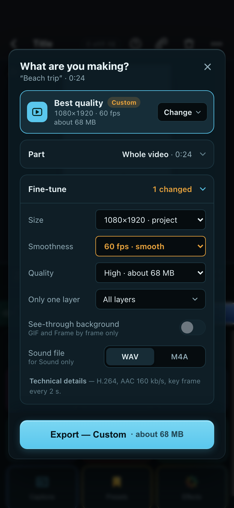

Phone · first glance

What you see first: six tiles; “Fits Reels & TikTok” only because this project is 9:16.
Phone · Fine-tune opened

What you see first: 60 fps picked, so the goal says Custom and Fine-tune “1 changed”.
Good
- CapCut’s idea of choosing a goal, without its look.
- Every tile says what you will get before you pick it.
Weaker than A
- A tile hides what it changes (“Smaller to send” is one size down plus Medium quality).
- Six tiles plus Fine-tune means more combinations to explain and to test.
- Tiles named after apps would be a trap: FreeMotion never crops, so a “TikTok” tile on a wide project would add black bars.
- On a phone it is the tallest first screen of the three.